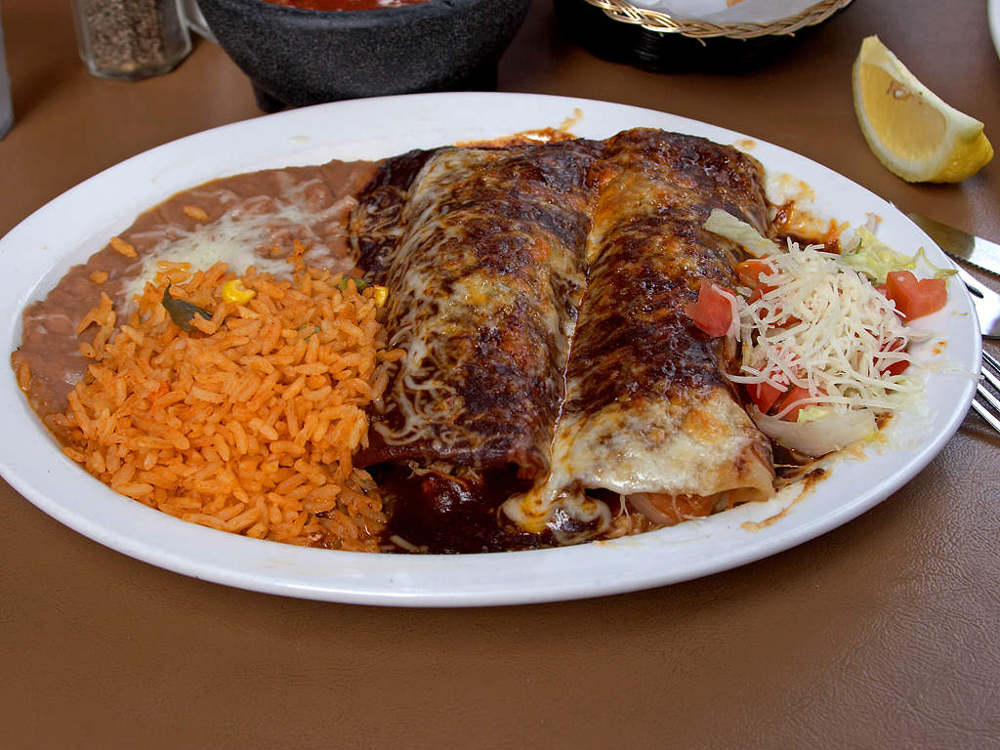

Enchiladas
Description
This is a recipe for enchiladas! But the picture is a lie! A lie, I tell you! I got it from wikipedia, and it is of enchiladas with corn tortillas. The recipe uses flour tortillas.
The picture is out of copyright, so I am using it instead.
Ingredients
- 8 flour taco-size tortillas
- 2 boneless skinless chicken breasts
- 3 small cans of enchilada sauce (about 10.5 oz)
- 1 bunch of green onions, sliced 1/4 to 1/8 inch
- 16 oz. bag of shredded monterey jack or Mexican blend of cheese
- cooking spray
Steps
- Cook chicken, however you like, and shred it.
- Spray or grease casserole pan.
- Coat bottom of casserole pan thinly with some of the enchilada sauce
- Roll out wax paper to lay out all the tortillas at one time.
- Top each tortilla with about 3 tablespoons of enchilada sauce to cover to within about 1/2 inch from edge.
- Lay a line of shredded chicken across the diameter of the tortilla to about 1/2 inch of edge.
- Sprinkle cheese along the chicken and then chopped green onions along the line.
- Roll the tortillas (without bothering to tuck the ends) and line them in the casserole dish, seam down.
- Pour the rest of the sauce over the enchiladas in the pan (usually at least a whole can) trying to cover thoroughly so they don't dry out.
- Sprinkle any remaining cheese and green onions over the top of the casserole.
- Bake at 350 for about 30 minutes. Cover with foil for all or most of the baking time.